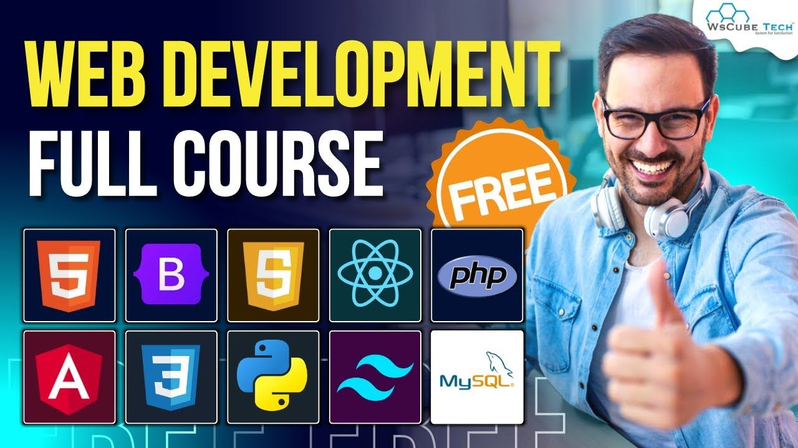

Get ready to spice up your coding journey with Hot Beans! This exciting and comprehensive course is your gateway to mastering web development, whether you’re just starting out or looking to level up. In this course, you'll explore the building blocks of the web—HTML, CSS, and JavaScript—while learning how to develop fully functional websites that are as fast as they are visually stunning.
Through a blend of interactive lessons, real-world coding challenges, and collaborative projects, you’ll work with cutting-edge frameworks and technologies like React, Node.js, and MongoDB. The course prepares you for everything from front-end design to back-end server management, ensuring you have a well-rounded understanding of full-stack development.
This link will send you to coursera which you can search for the course we help to show aswell
Our Courses
HTML & CSS for Beginners Duration: 4 Weeks Learn the fundamentals of web design and structure. From creating static pages to building responsive websites, this course will teach you how to use HTML and CSS to bring your ideas to life.
JavaScript Essentials Duration: 6 Weeks Dive into one of the most popular programming languages for web development. This course covers core JavaScript concepts, DOM manipulation, and interactivity to help you create dynamic, user-friendly websites.
Frontend Development with React Duration: 8 Weeks React is one of the most in-demand front-end frameworks. In this course, you'll master React fundamentals, JSX, component-based architecture, and state management to build modern, responsive web applications.
Backend Development with Node.js Duration: 8 Weeks Learn how to build scalable back-end systems using JavaScript and Node.js. You’ll dive into server-side development, databases, authentication, and APIs to create dynamic applications that power modern websites.
Full Stack Web Development Duration: 12 Weeks Combine your front-end and back-end knowledge to become a well-rounded developer. This hands-on course covers HTML, CSS, JavaScript, React, Node.js, and databases. By the end, you'll be equipped to build and deploy complete web applications from start to finish